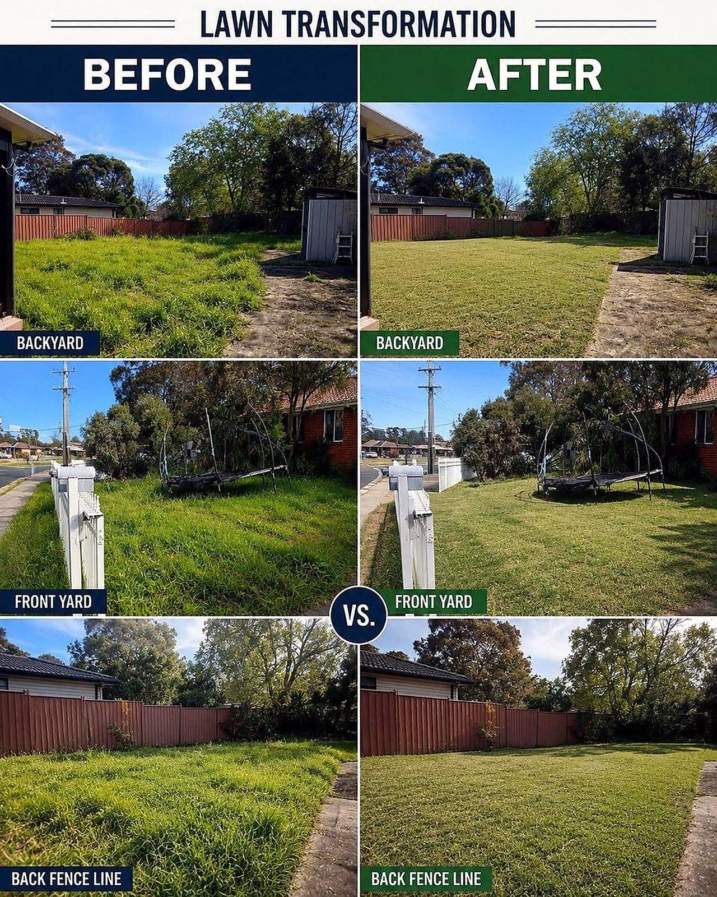
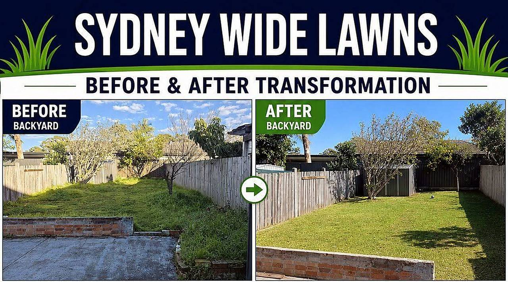
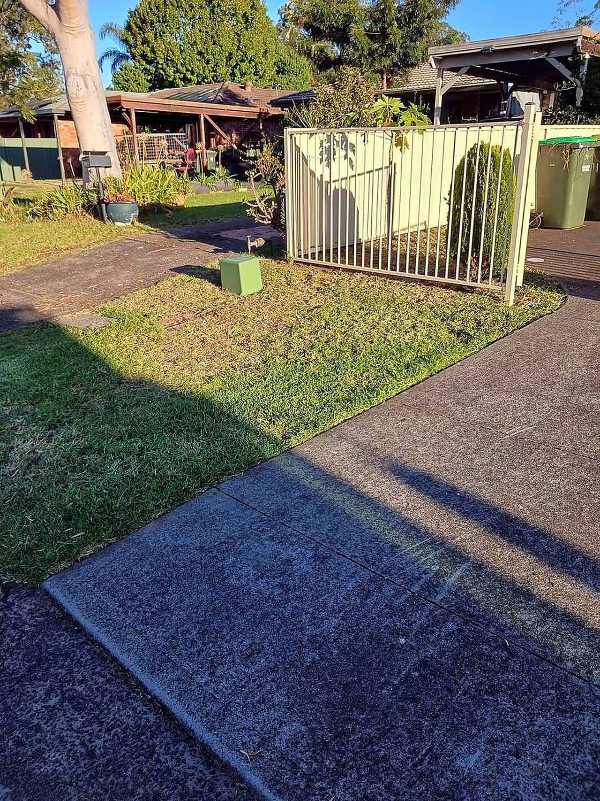
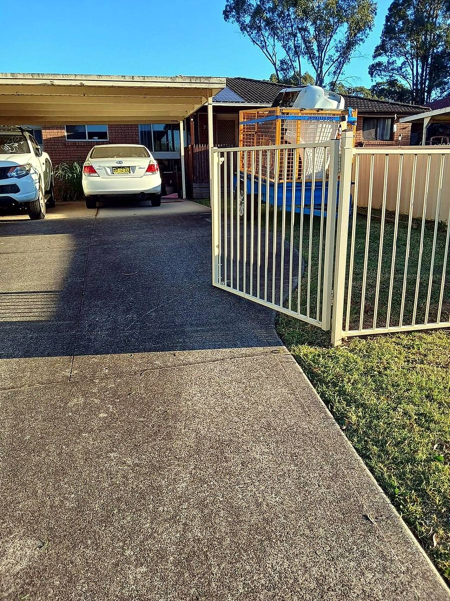
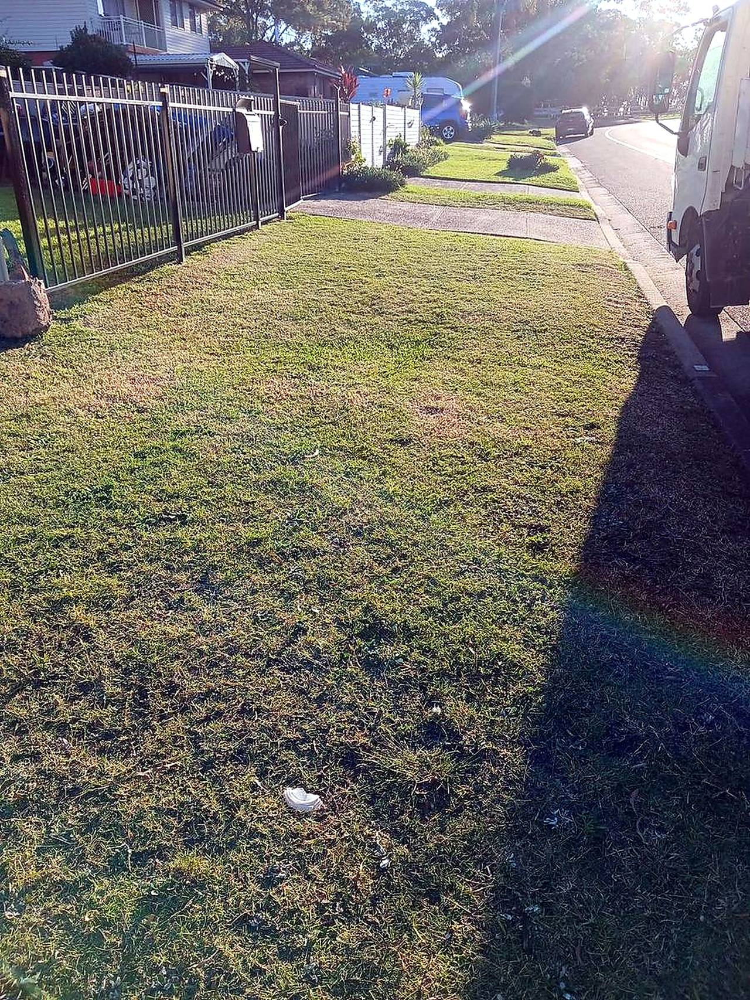
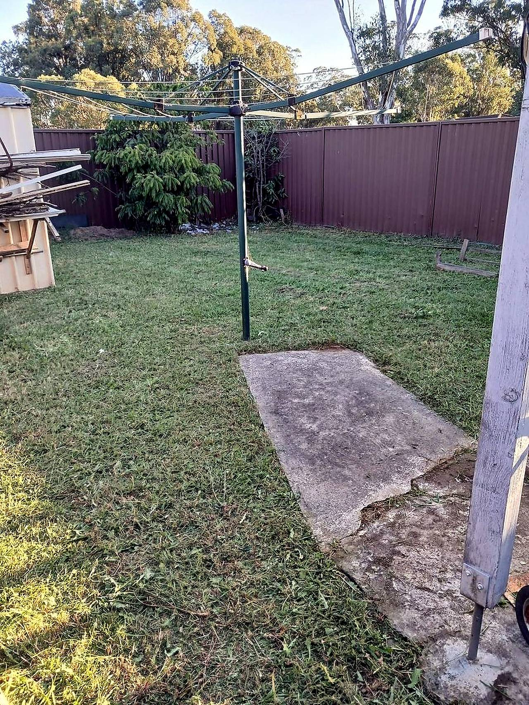
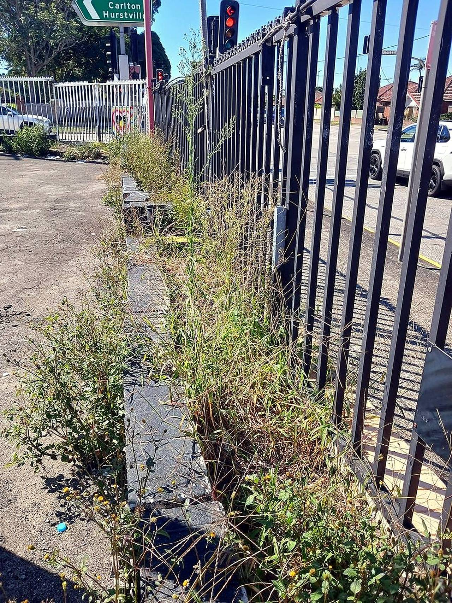

Lawn mowing
Regular or one-off mows — front, back, nature strip and everything in between, cut clean and even.
What we do
From the weekly mow to the full clean-up.
Regular or one-off mows — front, back, nature strip and everything in between, cut clean and even.
Crisp edges along paths, driveways, fences and garden beds — the detail that makes the difference.
Hand weeding and garden bed care so the beds look as sharp as the lawn.
Targeted spraying for weeds in lawns, beds and paved areas — safe and effective.
Overgrown block? Moving out? One-off clean-ups to get the whole yard back in shape.
All clippings and green waste taken away — no pile left behind for you to deal with.
How it works
Three steps to a lawn you don't have to think about.
01
Call or message with your suburb and what the yard needs — photos help.
02
A clear price for the job — regular visits or one-off clean-up.
03
The mow, the edges, the beds, the waste — done right, every visit.
Why Sydney Wide
From the Shire to the Hills — if you're in Sydney, we can get to you.
Mowing, snipping, edging, weeding and waste removal — not just a quick cut.
Our transformations do the talking — check the gallery.
Clear quotes, reliable visits, and a yard that's ready for the weekend.

Sydney Wide Lawns — mowing, edging and garden care across Sydney.
Before & after
Real yards, real results — mowed, edged, weeded and cleaned up.






Before & after photos from recent jobs around Sydney.
Free quotes
Send through your suburb and a photo of the yard — we'll come back with a price.